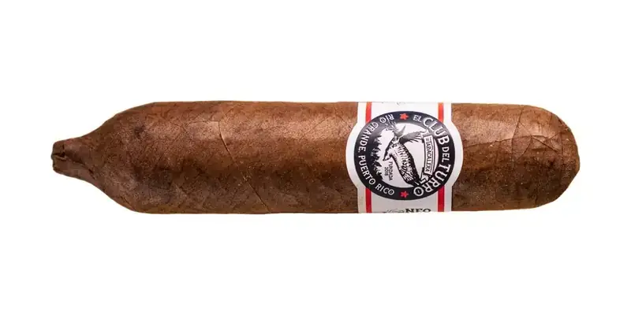

Cartucho
By El Club del Turro · Río Grande, Puerto Rico
Corojo binder and a 100% Puerto Rican Corojo filler from Finca Neo Jibairo; its own mold. Smoked wood, black coffee and pepper.
- Wrapper: Habano 2000
- Strength: Full
- Vitolas: Cartucho 4.25" x 30/60
Sources: 1
See Cartucho in the app, rate it and save it to Mi Hoja.